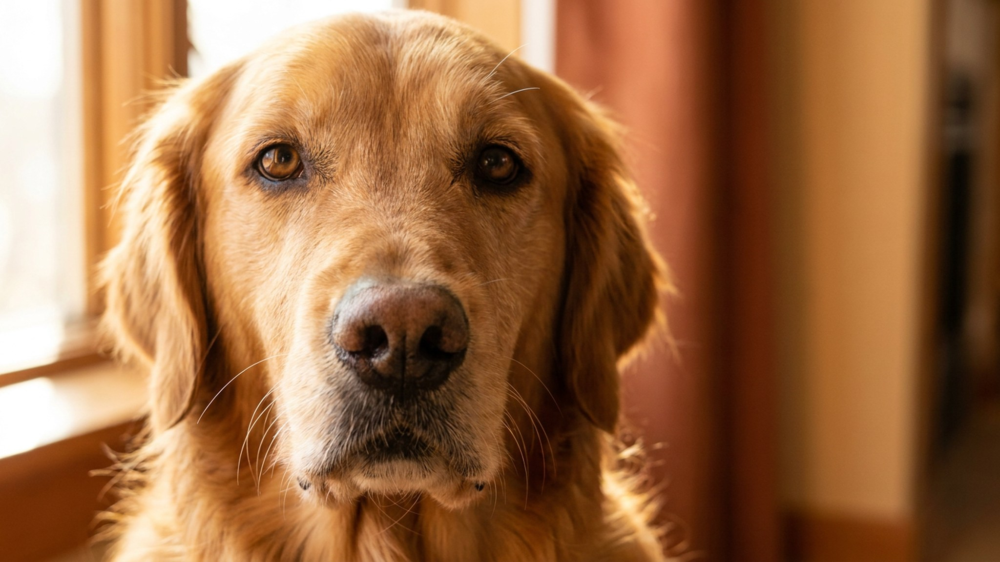

Щенок «с рук по объявлению за полцены» слишком часто оборачивается годами походов по ветеринарам и разбитым сердцем. Здоровье и психика взрослой собаки закладываются до того, как вы её забрали, — а значит, вы выбираете не столько щенка, сколько заводчика. Ниже — 7 признаков, по которым честного заводчика видно сразу, на что смотреть при встрече с помётом и когда правильнее уйти без щенка.
🐾 Первая помощь — всегда под рукой
AnimaLife подскажет, что делать в тревожной ситуации с питомцем ещё до визита к врачу. Откройте в один тап.
За низкой ценой и готовностью «отдать хоть завтра» нередко стоит бизнес на щенках: сук вяжут каждую течку, малышей рано отрывают от матери, условия содержания скрывают. Такой щенок чаще растёт с проблемами со здоровьем и психикой, которые всплывают уже дома. Ответственный заводчик, наоборот, вкладывается в помёт и не спешит его сбыть.
🐾 Экономьте на лишних визитах к врачу
Сначала спросите AI-ветеринара в AnimaLife — часто этого достаточно, чтобы понять, нужен ли визит к врачу.
🐾 Понравился разбор?
Подпишитесь на канал — каждый день разбираем по одному тревожному симптому у кошек и собак: что в пределах нормы, а когда пора к врачу. Подпишитесь, чтобы не пропустить разбор, который может спасти здоровье вашего питомца.
Здоровый щенок выглядит и ведёт себя живо. Понаблюдайте за всем помётом в спокойной обстановке, не торопясь с выбором.
Если что-то в виде или поведении щенка настораживает — это повод спокойно обсудить с ветеринаром до сделки, а не убеждать себя «перерастёт».
Развернуться и уехать без щенка — нормальное решение, если: мать отказываются показывать; настойчиво торопят с оплатой и «предоплатой, иначе заберут»; предлагают передать щенка на парковке или на вокзале; нет никаких документов; в помёте несколько явно вялых или пугливых малышей. Хороший заводчик не давит и не спешит — спешит тот, кому есть что скрывать. Терпение на этом этапе экономит годы и нервы.